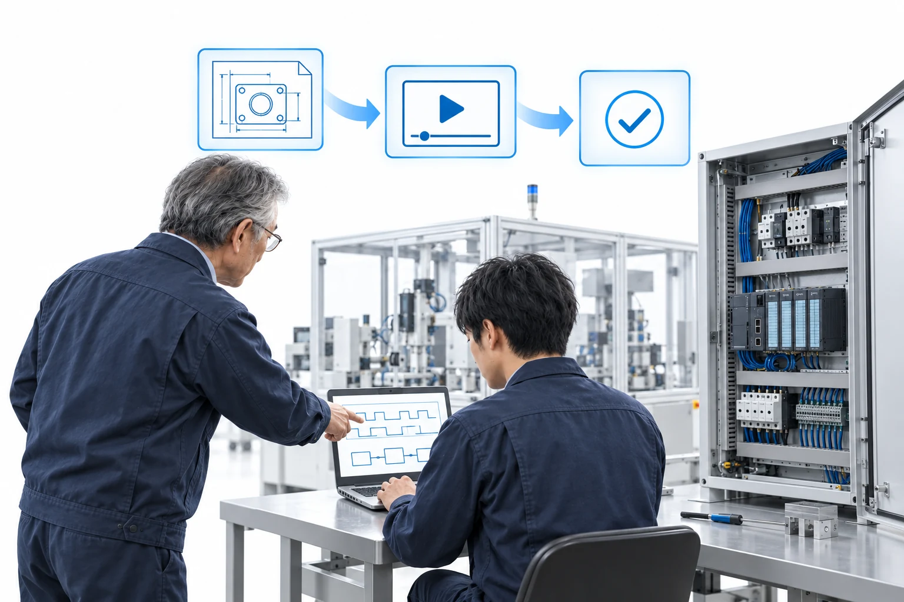
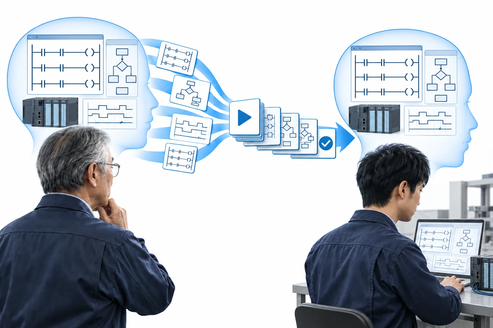

製造業の設備・保全・技術部門へ
熟練者の暗黙知を
形式知に変え
次世代に定着させる
現場の技術を 教材・課題・テストへ
社内で回る教育システムの導入を支援します
社名の「Lore」には「伝承」の想いを込めています。
現場で培った技術を、次世代へ。

西原 健人ロアニクス株式会社 代表
生産設備屋のイヌ
- 技術者の指導
- 500名以上
- パナソニックの生産設備開発部門に
- 17年従事主任職・プロジェクトリーダーを経験
- メカトロニクス職種
- 技能五輪出場
PLCスクール・技術者コミュニティ
職種も現場も越えて学ぶ
設計から製造・保全・工事まで
職種・分野を一覧で見る
職種・担当
- 生産技術
- メカ設計
- 制御設計
- 電気設計
- PLCプログラミング
- 生産設備開発
- 設備設計
- 装置立上げ
- 設備保全
- 設備改善
- ロボット制御
- 技術教育
業種・専門分野
- 化学メーカー
- 半導体
- プラント
- 配管
- 制御盤工事
- 制御盤製作
- 設備配線
- 配管設計
- 配管施工
- プラント設計
- プラント保全
- 半導体製造装置
教育システム導入・伴走
教える内容も順番も
社内に残る教育システムへ

- 技術を棚卸しする熟練者の判断と現場のつまずきを整理
- 教育体系を組み立てる学ぶ順番と教材・課題・理解度テスト
- 社内で教え続ける導入後の運用・教材の更新を支援
事業内容
学ぶ人と現場と教える仕組みを支える
画像は支援内容を伝えるためのイメージです
無料オンライン30分
技術伝承の無料診断
教えたい技術と いまの教え方を伺います。
教材にできる範囲と どこから始めると効果が大きいかを
その場でお伝えします。
- 教材にできる仕事の洗い出し
- 着手する順番と進め方の目安
- 公開中のシミュレーターと教材の形のご紹介
相談内容が固まっていなくても大丈夫です。担当は代表の西原です。
代表紹介
現場で培った技術を次の担当者へ
西原 健人
ロアニクス株式会社 代表生産設備屋のイヌ
17年
パナソニックの生産設備開発部門に17年従事（現：パナソニック プロダクションエンジニアリング）- 数億円規模の生産ラインの立上げを数多く担当。リピート機ではなく、毎回お客様も仕様も変わる。相手は国内外の最大手
- プロジェクトリーダーを務め、当時最年少で主任職に昇格／技能五輪 メカトロニクス職種に出場
- 2024年「生産設備屋のイヌ」としてSNS発信を開始（設備・制御・PLCがわかりやすいと評判に）
- 教育とコミュニティ技術顧問・PLCスクールを開設。受講生100名超。制御・PLCに特化した、国内でも数少ない技術者のコミュニティを運営
- 2026年独立し、ロアニクス株式会社を設立
- 2027年2月PLCの書籍を出版予定
- YouTube登録者
- 約6,500人
- Xフォロワー
- 約6,500人
- X月間インプレッション
- 2,000万超
- これまでのPLCの相談
- 500名以上
導入のご相談
貴社の教育課題を聞くところから
- 1お問い合わせ
教えたい技術や育成の課題を送る
- 2ヒアリング
現状と目指す姿を整理
- 3ご提案
ヒアリングのあとにお見積り
- 4支援開始
内容を確認してから着手
社内に残る教育の仕組みを
一緒に作りませんか
教育システムの導入を相談する まだ決めていない方は 無料診断（オンライン30分）から
よくある質問を見る
メールでも受け付けています
lorenics@outlook.jp